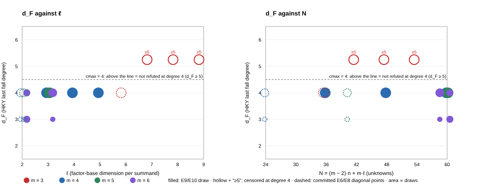

What ran. Amendment 10 of research/fall_degree_bounds_20261008/PREREGISTRATION.md, registered before any draw.
Engine examples/hky_par.rs at source commit 5296ce8a7438. Each instance built it from an S3 git archive
(fd-src-5296ce8.tgz, sha256 dade82a3…), and the binary sha256 was 533f182b… on all three instances.
Draw rule: ladder_sample with cell_seed(20261012, n, ℓ, m), the first 4 draws with no solutions, cmax = 4.
A draw that is not refuted by degree 4 is recorded as d_F ≥ 5. Launch card e10/launch3.card.yaml (receipt e10/launch_receipt3/).
Hosts: ephemeral Spot, lab account, us-east-1, AMD EPYC 9R14. Job A on m7a.8xlarge (32 vCPU); jobs B and C on m7a.4xlarge (16 vCPU). No isolation level was earned,
so wall times below are indications only and are not scored. No Spot interruption.
Gates, on each instance's exact binary, all passed.
fast_chained_count_matches_the_reference and chained_count tests, 3 passed.e7/validate.sh, AGREE 24 DISAGREE 0.newcells reproduces e6/B_5-10-2.rerun, e6/B_3-18-6, e8/E8_4-8-2 and e8/E8_5-8-2 exactly (empty diffs).
Recorded d_F of all 36 E9/E10 draws (filled), and the committed diagonal points E6 (3, 18, 6), E6 (5, 10, 2) and E8 (4, 8, 2) (dashed), plotted against ℓ (left) and N (right).
A hollow marker labelled “≥5” is a draw whose degree-4 closure stopped without 1. Marker area grows with the number of draws. Source: plot_e9_e10.py.
| exp. | cell m:n:ℓ | N | on mℓ = n | draws kept | d_F per draw | degree-4 closure dim / columns | s per draw (threads) | peak RSS |
|---|---|---|---|---|---|---|---|---|
| E9 | 6:10:3 | 58 | no | 1, 2, 3, 4 | 4, 3, 4, 4 | 456,838 / 456,838 (d_F = 4 draws) | 179–370 (32); 3.4 for d_F = 3 | 21.7 GB |
| E9 | 5:15:3 | 60 | yes | 0–3 | 4, 4, 4, 4 | 523,686 / 523,686 | 902–1,348 (32) | 30.1 GB |
| E10 | 4:12:3 | 36 | yes | 0–3 | 4, 4, 4, 4 | 66,712 / 66,712 | 20–22 (16) | 1.0 GB |
| E10 | 4:16:4 | 48 | yes | 0, 1, 3, 4 | 4, 4, 4, 4 | 213,053 / 213,053 | 477–559 (16) | 5.6 GB |
| E10 | 4:20:5 | 60 | yes | 0, 1, 2, 4 | 4, 4, 4, 4 | 523,686 / 523,686 | 5,191–7,099 (16) | 31.2 GB |
| E10 | 6:12:2 | 60 | yes | 0–3 | 3, 3, 4, 4 | 523,686 / 523,686 (d_F = 4 draws) | 261–267 (16); 2.1–2.2 for d_F = 3 | 26.7 GB |
| E10 | 3:21:7 | 42 | yes | 0, 1, 3, 4 | ≥5, ≥5, ≥5, ≥5 | 117,335; 116,485; 118,185; 117,505 / 124,314 | 134–141 (16) | 1.9 GB |
| E10 | 3:24:8 | 48 | yes | 0–3 | ≥5 ×4 | 186,549; 187,453; 186,323; 185,193 / 213,053 | 773–793 (16) | 4.8 GB |
| E10 | 3:27:9 | 54 | yes | 1–4 | ≥5 ×4 | 160,259 (all four) / 342,541 | 492–533 (16) | 6.7 GB |
Degree-2 and degree-3 closure dimensions: per_degree in each record. At m = 3 they are identical across draws within a cell (62/2,338; 71/3,056; 80/3,870).
Raw records: e9/run-r3/out/E_*.jsonl, e10/run-r3-B/out/E_*.jsonl, e10/run-r3-C/out/E_*.jsonl, with gate logs, build logs and host files beside them.
decideThe theorem registered_scoring in lean/FallDegree/Verdict.lean is built in job E12b (log e12/…/lean/lake.log). Its status is recorded in RESULTS.md.
e11/scaling/).
That run uses the same closure code. A separate engine, hky_crosscheck, was running on draw 0 when this report was written; its result is recorded in RESULTS.md when it finishes.